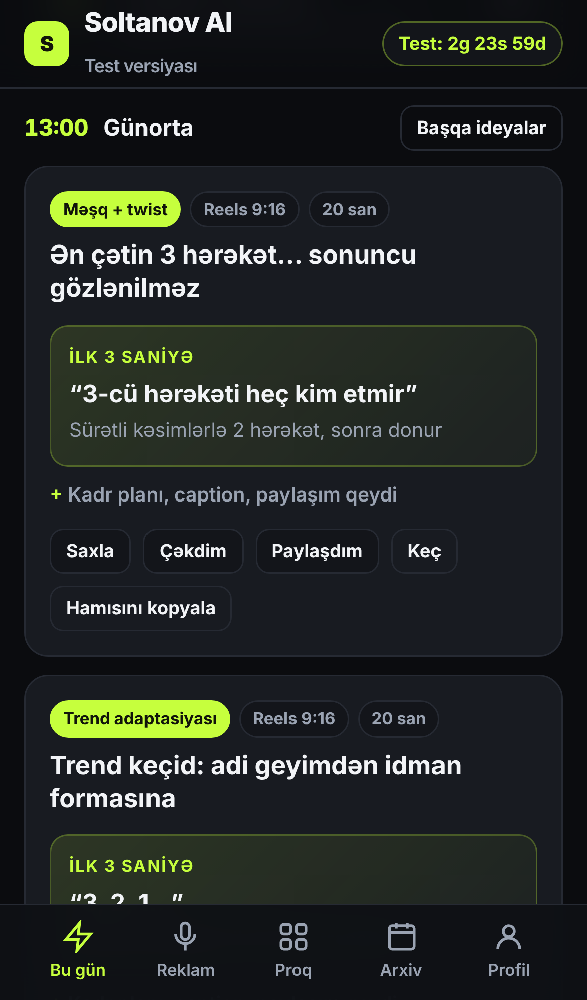
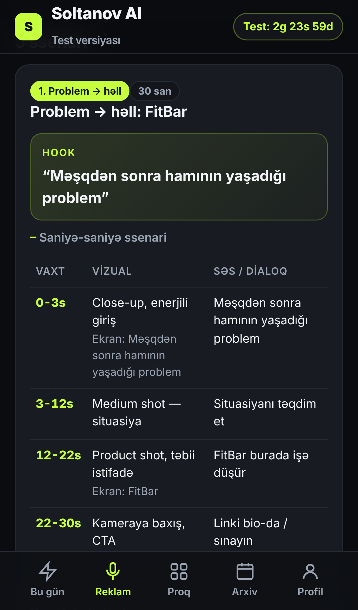
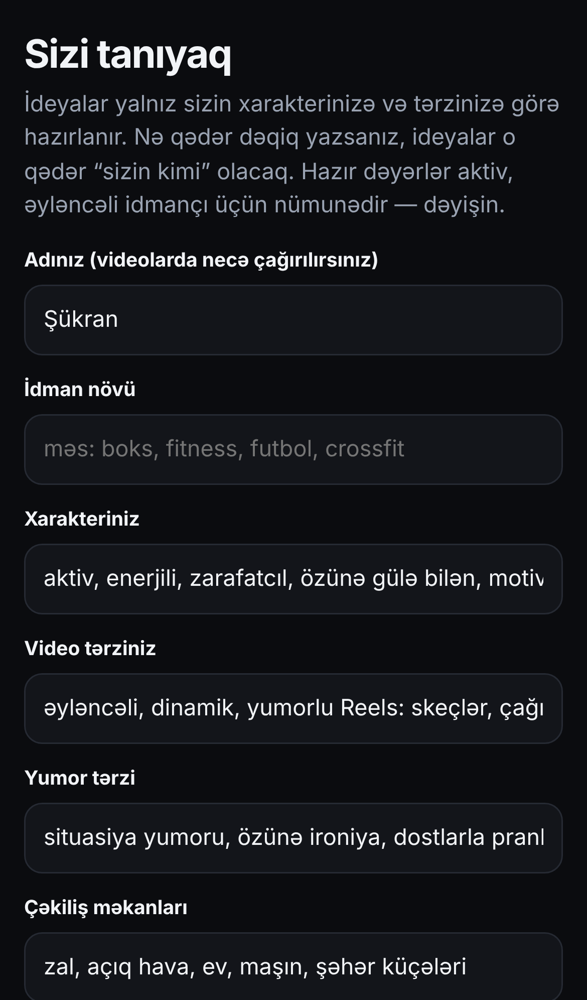
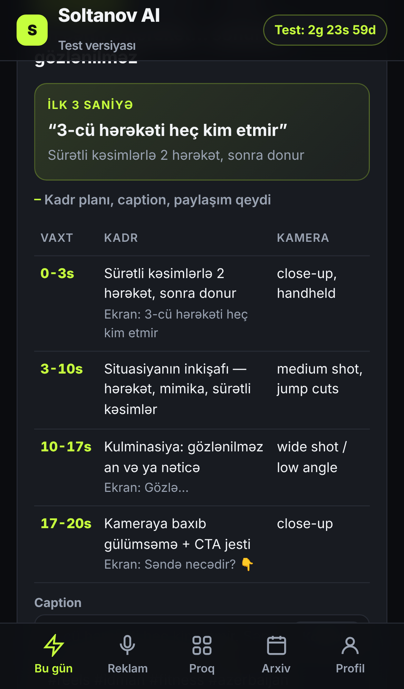
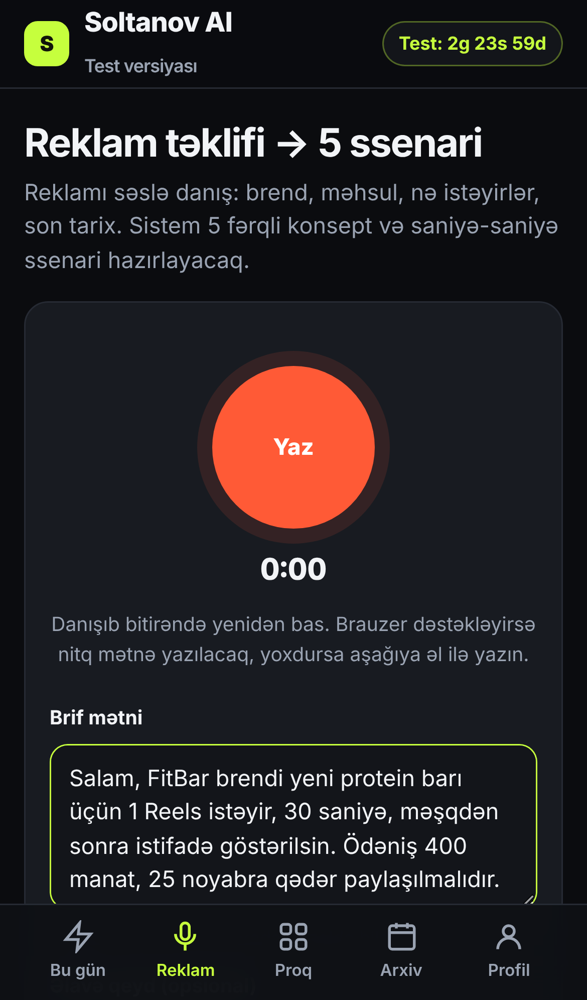
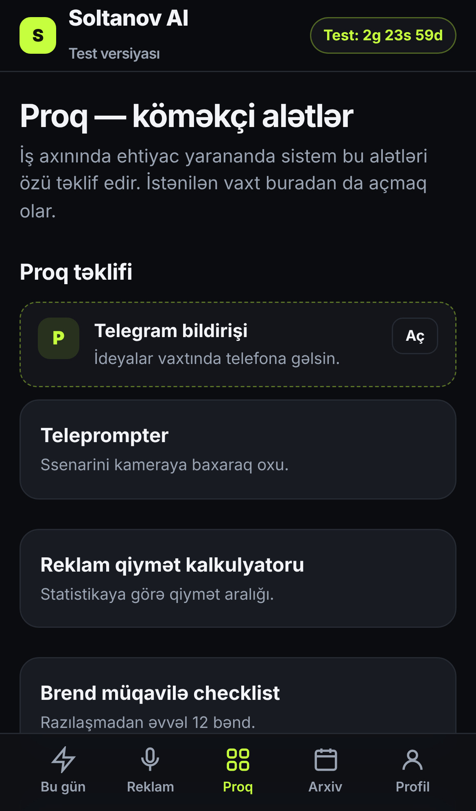
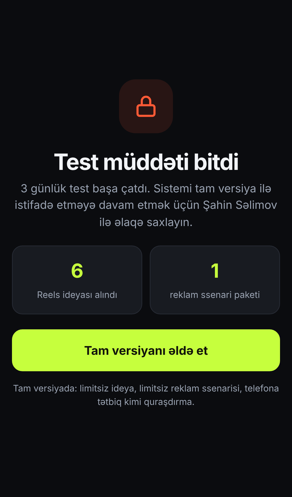
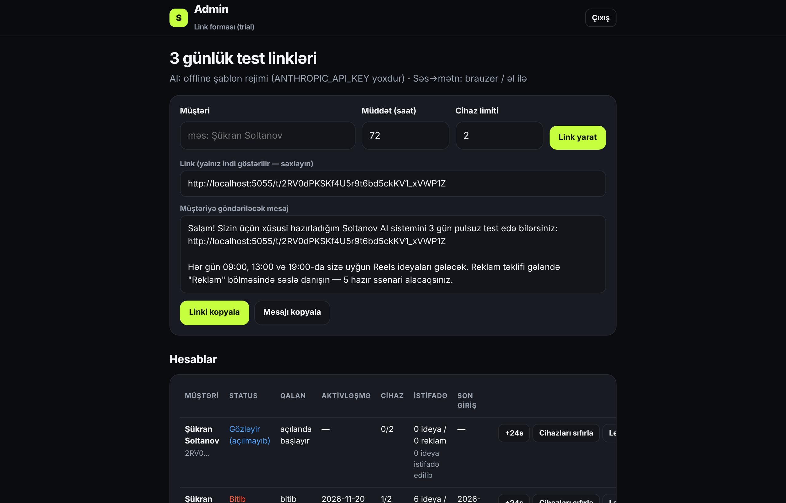

İdmançı-bloqer üçün şəxsi AI kontent prodüseri. Hər gün 3 dəfə onun xarakterinə uyğun, çəkilməyə hazır Reels ideyaları və səsli reklam brifindən 5 hazır ssenari.


Gündəlik Reels ritmi saxlanmalıdır, amma yeni, ona uyğun mövzu tapmaq hər gün vaxt və enerji aparır.
Brend təklif göndərir — konsept, ssenari, caption yazmaq saatlarla çəkir, cavab gecikir.
Qiymət, müqavilə şərtləri, çəkiliş planı, teleprompter — hamısı ayrı yerlərdə və ya heç yerdə.
Ümumi "fitness məsləhətləri" kömək etmir. Ona özünün tərzində — aktiv, enerjili, əyləncəli ideyalar lazımdır.
09:00, 13:00, 19:00 — hər slotda 3 ideya: mövzu, ilk 3 saniyəlik hook, saniyə-saniyə kadr planı, caption, paylaşım qeydi. Təkrar yoxdur.
Reklam təklifini səslə danışır. Sistem brifi təhlil edir və 5 fərqli bucaqdan hazır ssenari, CTA və caption verir.
Qiymət kalkulyatoru, müqavilə checklist, kontent təqvimi, teleprompter — vəziyyətə uyğun avtomatik təklif olunur.
Yükləmə tələb etmir — link ilə açılır, telefona tətbiq kimi əlavə olunur.
Claude AI ilə strukturlaşdırılmış nəticə; AI açarı olmasa belə şablon rejimində işləyir.
Telegram bildirişi — yeni ideyalar vaxtında telefona gəlir.
İlk açılışda sistem onu tanıyır. Bütün ideyalar və ssenarilər bu profilə görə yazılır.

| Slot | Əhval | Nə gəlir |
|---|---|---|
| 09:00 | Enerji, gün planı | 3 ideya |
| 13:00 | Yumor, qidalanma, iş arası | 3 ideya |
| 19:00 | Əsas yayım — ən güclü skeç / çağırış | 3 ideya |
Başlıq · kontent sütunu · format · ilk 3 saniyəlik hook (söz + vizual) · saniyə-saniyə kadr planı + camera angle · caption + hashtag · səs tövsiyəsi · paylaşım qeydi · "niyə işləyir"

Hər generasiyada son 60 ideyanın başlığı modelə verilir — oxşar mövzu istənilmir.
Yeni ideya son 120 ideya ilə söz oxşarlığına (Jaccard) görə yoxlanır. 50%+ oxşardırsa atılır və əvəzi yaradılır.
Skeç → çağırış → POV → məşq + twist → trend → kulis → versus → sual-cavab → motivasiya.
Üst-üstə keçilən sütun müvəqqəti çıxarılır. Statuslar: yeni → saxlanılıb → çəkilib → paylaşılıb.
Server yatmış olsa belə (autoscale hostinq), tətbiq açılan anda buraxılmış slot dərhal yaradılır — ideyasız gün olmur.
Brend, məhsul, tələblər, son tarix
OpenAI Whisper və ya brauzerin nitq tanıması
Saniyə-saniyə: vizual, voiceover, ekran yazısı, CTA, #reklam caption
Brifdə olmayan fakt (qiymət, endirim) uydurulmur — "[brend təsdiqləsin]" kimi işarələnir.

| Alət | Nə vaxt təklif olunur |
|---|---|
| Teleprompter | Ssenari hazır olanda |
| Qiymət kalkulyatoru | Brifdə qiymət / ödəniş / büdcə |
| Müqavilə checklist | Şərt, eksklüzivlik, müqavilə sözləri |
| Kontent təqvimi | Son tarix və ya ≥3 çəkilmiş, paylaşılmamış video |
| Profil tənzimləmə | Həftədə ≥5 ideya keçilib |
| Telegram bildirişi | Bildiriş qoşulmayıb |

Edition-lar texniki olaraq ayrıdır: trial serveri lisenziya açarını qəbul etmir, tam versiya trial linkini qəbul etmir.
Link açılır, saat serverdə başlayır, profil
9 ideya/gün, reklam ssenariləri
Ekranda geri sayım, son gün xəbərdarlığı
Statistika + "Tam versiyanı əldə et"

Admin paneldə 1 klik, müştəriyə hazır mesaj
Hər gün 9 ideya, reklam ssenariləri
Aktivləşmə, son giriş, istifadə sayı
Statistika + əlaqə düyməsi
Lazım olsa +24 saat uzatma
Paket quraşdırılır, lisenziya açarı verilir

1 asılılıq (Anthropic SDK). Replit, VPS, Render-də işləyir.
Təhlükəsizlik: hash-lənmiş token-lər, rate limit, CSP, imzalı cookie.
15 avtomatik test: blok, cihaz limiti, slotlar, tam HTTP axını.
Mövzu axtarmağa sərf olunan vaxt → çəkilişə.